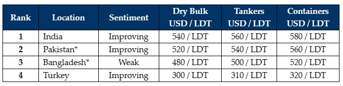

inWeekly Demolition Reports02/10/2023

Despite the impending onset of various holidays at the recycling destinations, India remains firmly poisedgiving sub-continent markets a real boost over recent weeks and even as the industry heads into Q4 of the year.
While Indian aggression may ease up a touch as Diwali holidays descend, it is expected that Pakistan, and perhaps even a decidedly lackluster Bangladesh, may eventually step up in the weeks and perhaps even the final few months leading into 2024, helping secure any of the remaining unsold tonnage, or fresh ones that may hit the market down the line.
A recently resurgent Pakistani market has witnessed an unexpected decline over the last couple of weeks as the few Buyers that were able to obtain L/C banking limits, managed to book various vessels (mostly Panamax Bulkers) thereby filling their plots quickly through August.
Bangladesh is likely to remain out of the buying for now, at least as long as they continue to insist on clearly presenting unworkable numbers below USD 500/LDT and while competing markets are unequivocally offering higher and faring far better.
On the far end, even though prices remain unchanged, a handful of Turkish Buyers have reportedly been offering extremely firm levels to snag a rare unit that is reported on offer to local Buyers.
Meanwhile, the supply of containers remains strong as some raucous pricing from Alang has meant that owners have been justified lately, in selling their vessels close to and (in some cases) above that magical USD 600/LDT mark.
Dry Bulk charter rates have also seen a slight improvement over recent months, but the supply of vintage 90s built and older Dry vessels should become strong towards the end of the year – and well into 2024.
For week 39 of 2023, GMS demo rankings / pricing for the week are as below.

📄 Download PDF: Ship-recycling-market-insight-week-39-2023-Q4-Boost.pdfSource: GMS,Inc. ,https://www.gmsinc.net/gms_new/index.php/web